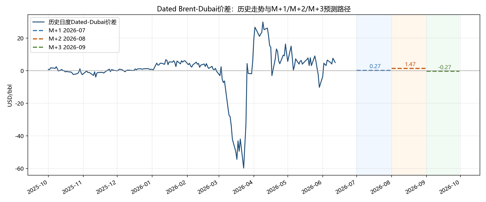

| 预测月份 | 预测对象 | 预测值 | 较当前变化 | 预测方向 | 模型 | 变量集 | 方向回测准确率 | 是否跑赢随机游走 |
|---|---|---|---|---|---|---|---|---|
| 2026-07 | M+1 | 0.2750 | -4.7750 | narrow | RandomForest | core | 62.31% | True |
| 2026-08 | M+2 | 1.4740 | -3.5760 | narrow | RandomForest | enhanced | 62.72% | True |
| 2026-09 | M+3 | -0.2689 | -5.3189 | narrow | RandomForest | enhanced | 75.00% | True |
方向准确率为历史滚动回测结果。
最新Dated-Dubai价差为 5.050 USD/bbl；未来预测方向为：M+1 2026-07 narrow、M+2 2026-08 narrow、M+3 2026-09 narrow。
当前三个预测月份中，M+1 使用 RandomForest + core，M+2 使用 RandomForest + enhanced，M+3 使用 RandomForest + enhanced。

实线为最近历史日度Dated-Dubai价差；水平虚线分别表示M+1/M+2/M+3完整自然月平均Dated-Dubai价差预测。向上表示价差扩大，Dated Brent相对Dubai走强；向下表示价差收窄，Dubai相对Dated Brent走强。
| 预测月份 | 预测对象 | 模型 | 使用特征集 | MAE | RMSE | 方向回测准确率 |
|---|---|---|---|---|---|---|
| 2026-07 | M+1 | RandomForest | core | 1.4604 | 1.9770 | 62.31% |
| 2026-08 | M+2 | RandomForest | enhanced | 1.7050 | 2.0456 | 62.72% |
| 2026-09 | M+3 | RandomForest | enhanced | 1.2183 | 1.7550 | 75.00% |
剔除2026年3月至4月极端行情样本。
| 预测月份 | 排名 | 因素 | 所属模块 | 重要性 | 经济解释 |
|---|---|---|---|---|---|
| M+1 2026-07 | 1 | Dated篮子平均升贴水 | Dated CTD | 0.397150 | 反映BFOET+WTI Midland篮子整体相对Dated的升贴水 |
| M+1 2026-07 | 2 | usgc_uk_cost | 产品价差 | 0.210751 | 根据业务逻辑衍生的变量 |
| M+1 2026-07 | 3 | Cold Lake相对优势信号 | 非制裁替代油 | 0.106981 | 反映Cold Lake相对其他替代油的竞争力 |
| M+1 2026-07 | 4 | Dubai近端曲线 | Dubai结构 | 0.054226 | Dubai近端结构越强，通常对Dubai相对Brent有支撑 |
| M+1 2026-07 | 5 | Dated篮子最便宜组分差 | Dated CTD | 0.052970 | 反映BFOET+WTI Midland篮子中最便宜组分对Dated的压力 |
| M+1 2026-07 | 6 | 价差5日滞后项 | 价差惯性 | 0.043347 | 反映Dated-Dubai价差一周左右的惯性 |
| M+1 2026-07 | 7 | dfl1 | 其他 | 0.042166 | 根据业务逻辑衍生的变量 |
| M+1 2026-07 | 8 | sg_mf05_hsfo35 | 产品价差 | 0.035663 | 根据业务逻辑衍生的变量 |
| M+1 2026-07 | 9 | sg_gasoil_hsfo35 | 产品价差 | 0.023430 | 根据业务逻辑衍生的变量 |
| M+1 2026-07 | 10 | 价差1日滞后项 | 价差惯性 | 0.010350 | 反映Dated-Dubai价差短期惯性 |
| M+2 2026-08 | 1 | Cold Lake相对优势信号 | 非制裁替代油 | 0.207645 | 反映Cold Lake相对其他替代油的竞争力 |
| M+2 2026-08 | 2 | WAF至UK Suezmax运费 | 运费 | 0.137368 | 反映西非原油流向欧洲的运费成本和套利压力 |
| M+2 2026-08 | 3 | me_asia_vlcc_usd_bbl | 运费 | 0.133328 | 根据业务逻辑衍生的变量 |
| M+2 2026-08 | 4 | usgc_uk_cost | 产品价差 | 0.126376 | 根据业务逻辑衍生的变量 |
| M+2 2026-08 | 5 | usgc_uk_afra_usd_bbl | 产品价差 | 0.122766 | 根据业务逻辑衍生的变量 |
| M+2 2026-08 | 6 | usgc_uk_vlcc_usd_bbl | 产品价差 | 0.102830 | 根据业务逻辑衍生的变量 |
| M+2 2026-08 | 7 | sg_hsfo_35s_usd_bbl | 产品价差 | 0.083757 | 根据业务逻辑衍生的变量 |
| M+2 2026-08 | 8 | sg_mf05_hsfo35 | 产品价差 | 0.037578 | 根据业务逻辑衍生的变量 |
| M+2 2026-08 | 9 | eu_diesel_hsfo35 | 其他 | 0.011069 | 根据业务逻辑衍生的变量 |
| M+2 2026-08 | 10 | Dated篮子最便宜组分差 | Dated CTD | 0.008300 | 反映BFOET+WTI Midland篮子中最便宜组分对Dated的压力 |
| M+3 2026-09 | 1 | usgc_uk_vlcc_usd_bbl | 产品价差 | 0.400943 | 根据业务逻辑衍生的变量 |
| M+3 2026-09 | 2 | Cold Lake相对优势信号 | 非制裁替代油 | 0.150728 | 反映Cold Lake相对其他替代油的竞争力 |
| M+3 2026-09 | 3 | USGC汽油价格 | 产品价差 | 0.134914 | 反映美国海湾汽油市场强弱及产品端支撑 |
| M+3 2026-09 | 4 | WAF至UK Suezmax运费 | 运费 | 0.090034 | 反映西非原油流向欧洲的运费成本和套利压力 |
| M+3 2026-09 | 5 | eu_gasoline_usd_bbl | 其他 | 0.035981 | 根据业务逻辑衍生的变量 |
| M+3 2026-09 | 6 | 中东至地中海VLCC运费 | 运费 | 0.033039 | 反映中东原油西向流动的运费环境 |
| M+3 2026-09 | 7 | dubai_curve_m2_m3 | Dubai结构 | 0.028099 | 根据业务逻辑衍生的变量 |
| M+3 2026-09 | 8 | me_asia_vlcc_usd_bbl | 运费 | 0.022529 | 根据业务逻辑衍生的变量 |
| M+3 2026-09 | 9 | usgc_diesel_usd_bbl | 产品价差 | 0.022153 | 根据业务逻辑衍生的变量 |
| M+3 2026-09 | 10 | 新加坡航煤/高硫燃料油价差 | 产品价差 | 0.020784 | 反映轻质产品相对重质产品收益强弱 |
Top Drivers 仅表示模型在历史样本中的主要依赖变量，不代表因果关系。
未来可补充Kpler实货流向、特殊事件哑变量、交易员观点集成、行业新闻API、研报文本解析等模块。